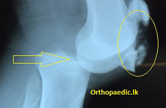
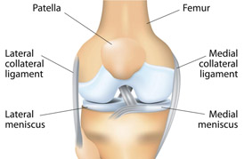
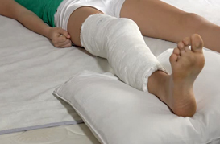
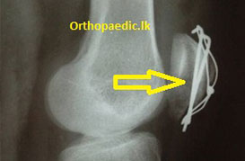

Overview
KNEE DISLOCATION

How Would The Knee Dislocate?
You knee may dislocate to the front, back and sides. However the commonly seen type is the knee dislocating to the back. For a knee to dislocated there has to be damaged to three out of four ligaments which hold the knee in place while you walk. The knee cap too can be a fracture in knee dislocations.
A violent force acting on the knee when it is bent to 90 degrees will dislocate to the back.

What Else Could Get Injured?
Blood vessels and nerves that serve the leg, ankle and foot run just behind the knee. They could get damaged with this injury. The damage could be over stretching, partial tear or complete separation.
Are There Immediate Complications?
Your leg/knee will look deformed. You will not be able to move it.
If oxygen supply to the leg is compromised, the leg will swell. The toes and foot feel numb. There will be excruciating pain.

Initial Treatment?
Your knee will be relocated to its normal position without delay and supported in a plaster of Paris half cast.
In certain occasions it could be fixed to a metal frame.
Damage to blood vessels and nerve will require additional investigations and surgical procedures which are done urgently.
The definitive treatment for knee dislocation could wait till these procedures are complete.

Definitive Treatment?
The knee is managed with plaster of Paris slab initially. The knee can be mobilized in a hinged knee brace. Knee bending is started with this.
Any remaining instability will be addressed as required.
Two ligaments inside the joint can be repaired by a keyhole surgical procedure.

Is It A Big Operation?
NO other treatment for this. I have heard native physicians pull the joint and put it back. This is a very painful thing to do. Why do you want to suffer when it can be done pain-free. In some cases it will not come back in place. They do not know how to confirm repositioning. Many patients are mistreated this way.

Time Periods Of Recovery ?
Initial immobilization will be about six weeks. You will need another period of six weeks for physiotherapy before being fully functional
FRACTURES OF THE KNEECAP
How Will The Knee Break ?
This is another common injury. Your kneecap will break if you land on your knee or as a dashboard injury.
The knee will swell as it bleeds into the knee joint. It usually breaks into two pieces. In severe injuries there could be many pieces.
Some occasions the bone may break at its poles

Is It A Serious Operation ?
It is a minor operation. There will be a cut about 4 inches over the kneecap. Operation will take about 30-40 minutes. Your leg will be supported with a plaster half cast.

Will There Be A Long Hospital Stay?
You will be discharged next day after the operation.

When Is The Plaster Removal? When Can I Walk ?
We will keep the plaster for about three weeks. Then you are allowed to start knee movements. You will be walking at six weeks with a walking aid.

Does The Metal Work Need To Come Out ?
The wire and pins are taken out at 9-12 months after surgery
Are There Complications Of This Operation ?
Knee stiffness is the commonest of all. It will improve with physiotherapy
Any Other Promising Form Of Treatment ?
No alternative treatment will work. Surgery without delay will be the best option.